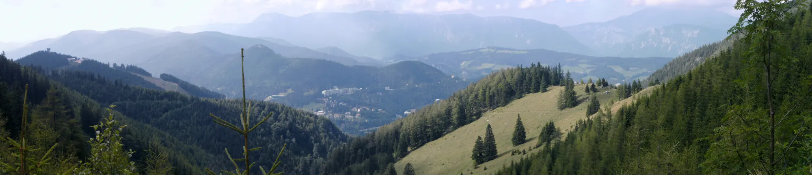
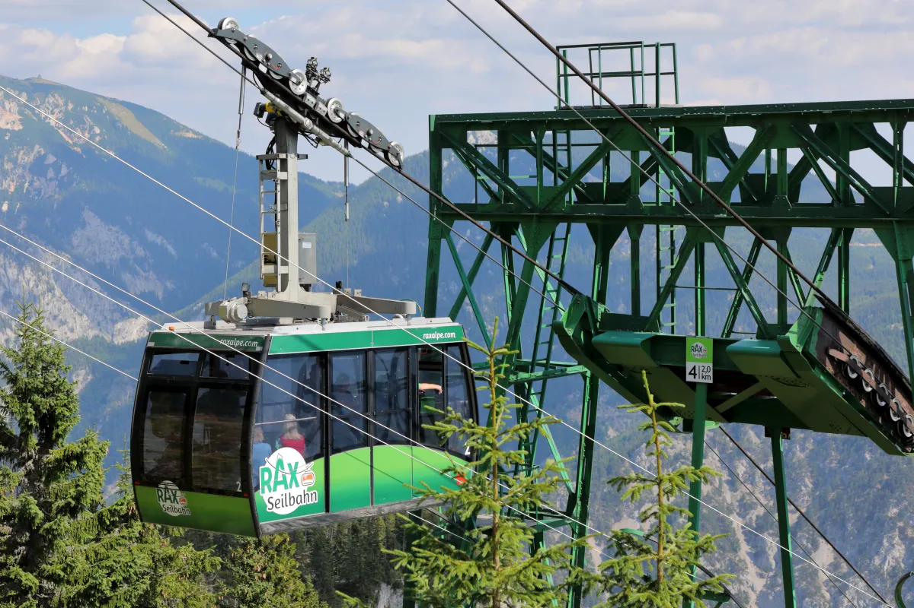
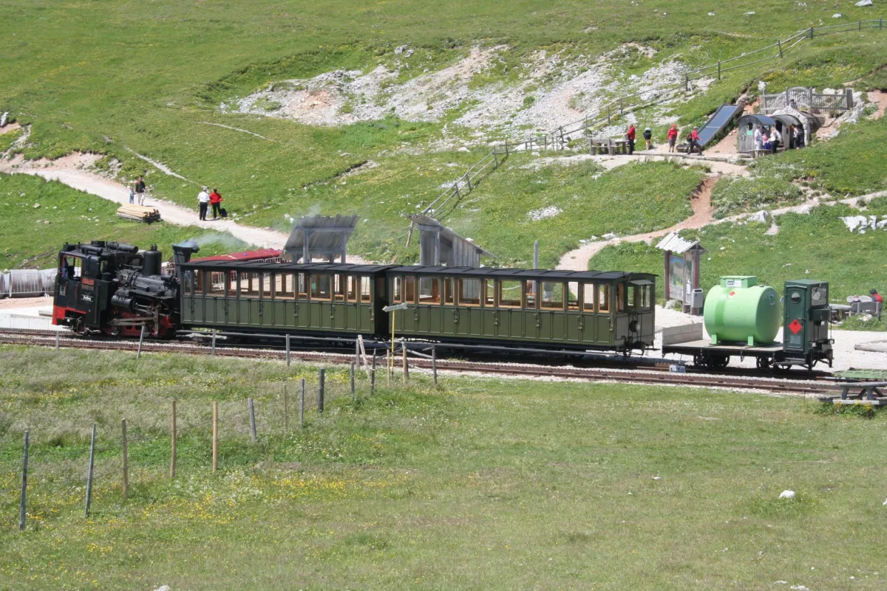

Fri 11Rain
Rax8° / 5° · 21l · NW 6
Schneeberg4° / 0° · 19l · NW 6

For Sunday 13 September, Rax looks like the better all-round day: warmer at altitude, less exposed to the forecast wind, and much easier to keep flexible.
Sunday is forecast dry on both mountains, with about four hours of sun. The useful difference is exposure: Rax is currently around 14° / 8°C with a moderate north-westerly, while Schneeberg is nearer 9° / 4°C with a much stronger summit wind. Add Rax's shorter mechanical ascent and flexible hut walks, and it is the more forgiving choice.
Mountain-level forecast, Friday 11 to Monday 14 September. Temperatures are daily high / low; wind uses the Beaufort scale. Source: Bergfex / GeoSphere Austria.
Forecast as at 11 September 2026, 11:49 CEST. Recheck the mountain forecast, webcams and operating status on Sunday morning.
Answer a few questions built from the actual trade-offs below. Nothing is sent anywhere — it just tallies your taps.

Fast and flexible. Austria's first passenger cable car reaches its 1,547m mountain station in about eight minutes, leaving the day open for plateau walks.

Higher, and the journey is the point. A cog railway climbs through forest and alpine meadow to just below Lower Austria's highest peak.
| Rax | Schneeberg | |
|---|---|---|
| Sunday mountain forecast | 14° / 8°C · dry · NW 3 | 9° / 4°C · dry · NW 6 |
| Public-transport chain | Train + bus/RUFbus + cable car | Train(s) + cog railway |
| Mountain-station elevation | 1,547m | about 1,800m |
| Highest reachable point | 2,007m — Heukuppe, extra hike | 2,076m — Klosterwappen, highest in Lower Austria |
| Mechanical ascent | Cable car, about 8 min | Salamander, 40 min; steam ascent, 90 min |
| Easy outing from top | Ottohaus, about 40 min each way | Damböckhaus, about 20 min each way |
| Summit outing | Heukuppe needs a serious hike plan | 7.3km circuit, about 2h50 |
you want a fast lift, a relaxed hut walk, and the freedom to choose a short panorama loop or a longer plateau route once you see the conditions.
reaching Lower Austria's highest point matters, and you have time for the cog-railway ride plus a moderate, nearly three-hour summit circuit.